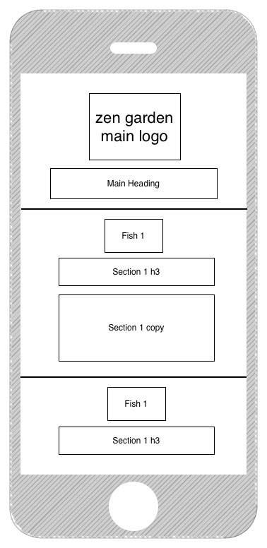

Greg Miles Cohen
UX Design - Wireframes & Sitemaps
Project Objectives:
Use best practices to create a design that meets the needs of both the client and the user.
Technologies Used:
Photoshop
Illustrator
OmniGraffle

< back to portfolio
© 2015 Greg Miles Cohen